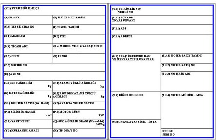

Araçlara ait mevcut sözleşmelerin sona ermesi ve yeni bir firma ile sözleşme yapılması durumunda, araç giriş kartlarının güncellenmesi
zorunludur. Mevcut araç giriş kartı üzerinde eski firmanın bilgileri bulunduğu sürece, kart ile saha giriş çıkış işlemleri gerçekleştirilemez. Bu durumda,
ilgili kart tarafımıza iade edilerek iptal işlemi yapılmalı, ardından yeni firma ile yapılan güncel sözleşmeyle birlikte yeniden kart başvurusu yapılmalıdır.
Başvurularınızı aşağıdaki kurallara göre hazırlayarak göndermeniz beklenmektedir:
1. Belgelerin Ziplenmesi ve Dosya İsimlendirme:
• Belgeleri tek bir Excel dosyası ile birlikte zip dosyasında ve plakaya göre isimlendirerek gönderin. Örnek dosya isimleri:
• 33 ABC 333 RUHSAT
• 33 ABC 333 SÖZLEŞME
• RİFAT SEFA KÜÇÜK KİMLİK/EHLİYET (ŞOFÖR)
• AKKUYU PERSONEL KARTI (ŞOFÖR)
• YEŞİL ONAY FORMU
2. Geçici Araç Girişi (Senelik Kart) Evrakları:
• Ruhsat
• Şoför Ehliyet, Kimlik, Akkuyu Personel Kartı
• Araç Kiralama Sözleşmesi
• Araç Kart Talep Formu Excel dosyası
• Mail Başvuru
• Yeşil Onay Formu
3. E-posta Düzeni:
• E-posta konusu: "FİRMA İSMİ – ARAÇ KART BAŞVURU – ARAÇ PLAKA" formatında yazılmalıdır (Örnek: "NAZIM INSAAT – ARAÇ KART BAŞVURU – 33 ABC 333").
• E-posta ekleri:
• Araç Kart Başvuru Excel dosyası
• Ruhsat, ehliyet ve kimlik belgeleri (örneğin: "33 ABC 333 RUHSAT") tek sayfada PDF olarak.
• Ruhsat sahibi firma ile araç kiralama sözleşmesinin birinci ve sonuncu sayfası tek PDF dosyasında, örneğin "33 ABC 333 SÖZLEŞME".
Evrakları rifat.kucuk@t2ic.com ve gonenc.caynak@t2ic.com -posta adreslerine göndererek başvuru sürecini başlatabilirsiniz.
ÖNEMLİ: Gönderilen belgelerin okunaklı, tam ve renkli fotokopileri olması gereklidir.

Araç ruhsatı, tek sayfada olacak şekilde okunaklı ve renkli olarak fotoğraf ya da PDF dosyası formatında hazırlanmalıdır.
Dosyanın net ve anlaşılır olması gerekmekte olup, aksi durumda başvuru süreci olumsuz etkilenebilir.
Başvuru işlemlerinin sorunsuz ilerleyebilmesi için şoförün ehliyet ve kimlik fotokopisinin arkalı önlü, tek sayfada, okunaklı ve renkli olarak hazırlanması gerekmektedir. Bu belgeyi diğer başvuru dosyalarıyla birlikte eklemeyi unutmayınız.

Başka bir firmadan kiralanan araçlar için başvuru işlemlerinde, kiralama sözleşmesinin birinci ve son sayfasının tek bir PDF
dosyasında iletilmesi gerekmektedir. Bu belgede her iki tarafın imza ve kaşesi bulunmalı ve sözleşmenin başlangıç ve bitiş
tarihleri açıkça belirtilmiş olmalıdır. Bu detaylar eksiksiz sağlanmadığı takdirde başvurular işleme alınmayacaktır.
Geçici araç başvuruları için hazırlanan Excel dosyasında aşağıdaki bilgilerin eksiksiz doldurulması zorunludur:
1. Talep Durumu: Yeni Talep, Şoför Değişikliği, Araç Değişikliği, Kart Tipi Değişimi, Hatalı Başvuru gibi önceden belirlenmiş seçeneklerden birini kullanın.
2. Talep Edilen Kart Türü: Elektronik Beyaz veya Elektronik Sarı gibi geçerli kart türlerinden biri seçilmelidir.
3. Halen Kullanılan Kart Çeşidi: Halihazırda kullanılan kart çeşidi belirtilmelidir.
4. Araç Marka-Model: Araç markası ve modeli eksiksiz ve doğru bir şekilde yazılmalıdır.
5. Araç Tipi: Belirlenen seçenekler doğrultusunda yalnızca geçerli araç tipini giriniz.
Lütfen belirtilen seçenekler dışında herhangi bir metin eklemeyiniz veya yazmayınız; aksi takdirde başvuru süreci olumsuz etkilenebilir.
ÖNEMLİ: Lütfen belirtilen seçenekler dışında herhangi bir metin eklemeyiniz veya yazmayınız; aksi takdirde başvuru süreci olumsuz etkilenebilir.